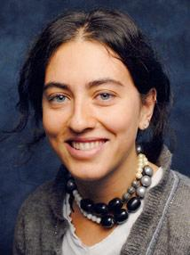
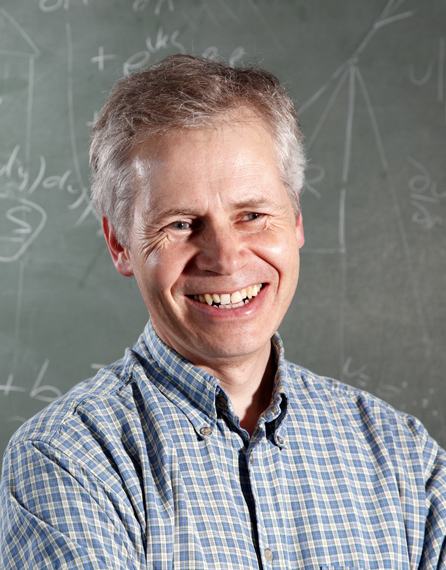
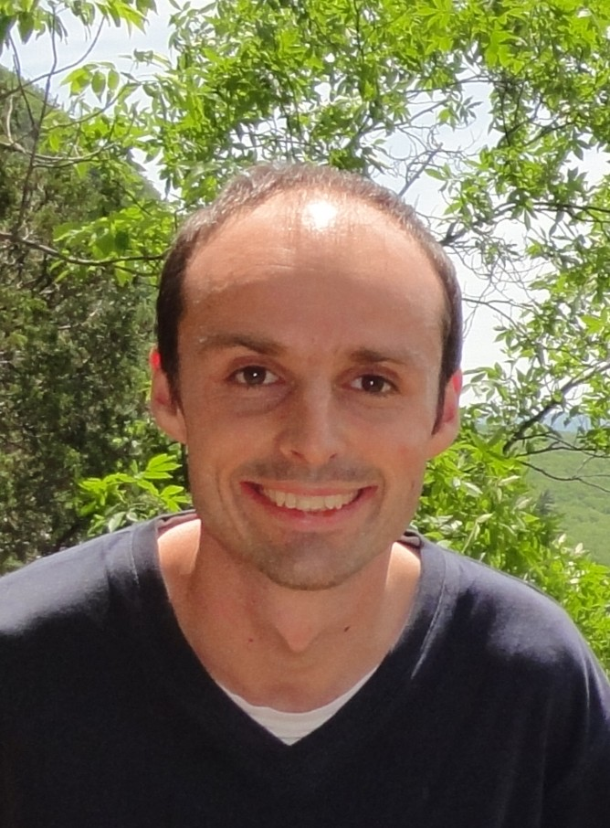
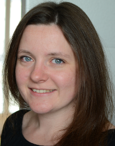

The University of Bath SIAM-IMA Student Chapter hosted the SIAM UKIE National Student Chapter Conference in 2018, bringing together students working in all areas of applied and industrial mathematics, and related fields, from across the UK and Ireland.
There were opportunities for students to showcase their research through a talk or a poster, and to hear talks by distinguished plenary speakers. The conference included 4 plenary talks, 29 contributed talks and 23 contributed posters, and was attended by 104 registered participants from 25 different institutions.
The organisers would like to thank all participants for making this conference a success.

Programme
The programme will comprise sessions of student talks and posters, and four plenary talks from the folowing speakers:
- Marta Blangiardo (Imperial College London) — Modelling spatio-temporal data: methods, examples and challenges;
- Simon Chandler-Wilde (University of Reading) — Coercivity of second kind boundary integral equations on Lipschitz domains;
- Ian Griffiths (University of Oxford) — iPhones and Dysons: using fluid dynamics to tailor technology;
- Nicole Spillane (École Polytechnique) — Domain Decomposition Methods with Adaptive Multipreconditioning.
This is a summary of the programme. Download the full conference programme for more details, including talk and poster abstracts.
| Monday 18th June | Tuesday 19th June | ||||
|---|---|---|---|---|---|
| 08:30 — 09:00 | COFFEE4 West Atrium | ||||
| 09:00 — 10:15 | SESSION 3AOliver DunbarDaoping Zhang4 West 1.2 | SESSION 3BAoife HillHannah Conroy BroderickPaul GreaneyWolfson Lecture Theatre | 10:00 — 10:30 | COFFEE & REGISTRATION4 West Atrium | |
| 10:30 — 11:45 | WelcomePlenary Talk - Nicole SpillaneDomain Decomposition Methods with Adaptive MultipreconditioningUniversity Hall | 10:15 — 10:45 | COFFEE4 West Atrium | ||
| 10:45 — 11:45 | Plenary Talk - Ian GriffithsiPhones and Dysons: using fluid dynamics to tailor technologyUniversity Hall | ||||
| 11:45 — 13:00 | SESSION 1ASean HonHassan IzanlooNikoleta Glynatsi4 West 1.2 | SESSION 1BEoghan StauntonTsz Yan LeungWakil SarfarazWolfson Lecture Theatre | 11:45 — 13:00 | SESSION 4ARóisín HillBartosz JaroszkowskiLeonardo Rocchi4 West 1.2 | SESSION 4BEnrico GavagninLisa Maria KreusserJehan AlswaihliWolfson Lecture Theatre |
| 13:00 — 14:00 | LUNCH4 West Atrium | 13:00 — 14:00 | LUNCH4 West Atrium | ||
| 14:00 — 15:15 | SESSION 2AHang LiuLuke SmallmanAdam Barker4 West 1.2 | SESSION 2BDanny GrovesMartina CraccoDane GrundyWolfson Lecture Theatre | 14:00 — 15:15 | SESSION 5AYiannis SimillidesSarah RoggendorfAnitgoni Kleanthous4 West 1.2 | SESSION 5BQays ShakirHelena StageRoberto GaliziaWolfson Lecture Theatre |
| 15:15 — 15:45 | COFFEE4 West Atrium | 15:15 — 16:30 | Plenary Talk - Simon Chandler-WildeCoercivity of second kind boundary integral equations on Lipschitz domainsUniversity HallClose | ||
| 15:45 — 16:45 | Plenary Talk - Marta BlangiardoModelling spatio-temporal data: methods, examples and challengesUniversity Hall | ||||
| 16:45 — 18:30 | Poster Session&Wine Reception4 West Atrium | ||||
| 19:30 | DINNERWessex Restaurant | ||||
In addition to the conference dinner on the Monday evening, we organised social events on both the Sunday and Tuesday, for any participants who wish to stay in Bath for an extra evening:
- Sunday evening: Drinks in the Bell Inn, Walcot Street, from 20:00, to welcome participants arriving on Sunday.
- Tuesday afternoon: Walking tour of the city of Bath, setting off from the university campus at approximately 17:00.
Plenary Talks
Marta Blangiardo (Department of Epidemiology and Biostatiscs, Imperial College London)
Modelling spatio-temporal data: methods, examples and challenges (PDF)
Monday 18th June, 15:45 – University Hall
In this talk I will present how the Bayesian hierarchical framework is commonly used to model spatial and spatio-temporal data. I will first consider the space as discrete (small area framework) and introduce autoregressive structures, which can be used to account for spatial and temporal dependency. I will focus on different examples drawn from the epidemiological field.
Then I will move to the case when space is continuous and introduce the geostatistics framework. Here I will present two examples drawn from epidemiology and environmental science.
I will finish the talk presenting some of the (methodological and non) challenges which researchers face in this context.
Simon Chandler-Wilde (Department of Mathematics and Statistics, University of Reading)
Coercivity of second kind boundary integral equations on Lipschitz domains (PDF)
Tuesday 19th June, 15:15 – University Hall
Boundary integral equation methods are a well-established technique for solving linear elliptic partial differential equations. Second kind integral equation formulations, taking the form \(\phi + K\phi = g\), where \(K\) is a boundary integral operator, are attractive because they are well-conditioned. However, it is not known whether standard Galerkin numerical methods are stable and convergent for these formulations for Laplace's equation with Dirichlet boundary conditions on general Lipschitz domains. When the domain \(D\) is bounded, smooth, and convex the standard second kind integral equation formulation for this simplest case can be written in this form where \(K\) is a contraction, i.e. \(\|K\|<1\). Under certain other conditions on \(D\) it is known that \(K=L+C\), with \(\|L\|<1\) and \(C\) compact, but it is a long-standing conjecture that this holds for all Lipschitz \(D\). Both these conditions guarantee convergence of Galerkin approximation methods.
But in this talk we exhibit examples of Lipschitz domains in 2D for which it does not hold that \(K\) is a compact perturbation of a contraction; in fact the so-called essential norm may be arbitrarily large. On the other hand, in a positive direction, we also exhibit new, modified versions of the standard second kind integral equation formulation which have the attractive property that the associated operators are coercive for all Lipschitz \(D\), so that every Galerkin method is convergent.
Boundary integral equation methods are a well-established technique for solving linear elliptic partial differential equations. Second kind integral equation formulations, taking the form \(\phi + K\phi = g\), where \(K\) is a boundary integral operator, are attractive because they are well-conditioned. However, even in the simplest case (Laplace's equation on a bounded domain \(D\) with Dirichlet boundary conditions), it is not known whether standard Galerkin numerical methods, for example so-called boundary element methods based on finite-element-type approximations, are stable and convergent for these formulations for general Lipschitz domains.
Ian M Griffiths (Mathematical Institute, University of Oxford and Department of Mathematics, Princeton University)
iPhones and Dysons: using fluid dynamics to tailor technology (PDF)
Tuesday 19th June, 10:45 – University Hall
As technology continues to advance, new strategies involving a range of scientific disciplines are required. Mathematicians can provide frameworks to predict operating regimes and manufacture techniques. In this talk we present two case studies: the fabrication of precision glass, for smartphones and new flexible devices; and the development of superior filters for vacuum cleaners. In each case we use asymptotic analysis to derive a model that determines the fabrication protocol required to produce a desired final product.
Nicole Spillane (CNRS, CMAP, École Polytechnique)
Domain Decomposition Methods with Adaptive Multipreconditioning (PDF)
Monday 18th June, 10:30 – University Hall
Domain decomposition methods are a family of parallel solvers for large linear systems. They all share the idea of approximating the inverse of some matrix by a sum of local inverses (in the so-called subdomains). I will present some classical domain decomposition methods, their limitations and some recent efforts to improve their robustness and scalability so that they can be applied to problems arising from real life simulations.
More precisely, I will present the method of adaptive multipreconditioning. This is a modification of the iterative solver (the preconditioned conjugate gradient algorithm). Instead of one single preconditioner, a family of preconditioners is applied at each iteration, each corresponding to one of the subdomains. This significantly increases the size of the minimization space and consequently accelerates convergence. I will introduce the method, discuss its analysis and show numerical results obtained in collaboration with C. Bovet, P. Gosselet and A. Parret-Fréaud.
Student Talks
Abstracts are available in the conference programme.
>Session 1A – 4 West 1.2 – 11:45—13:00, Monday 18th June
Sean Hon (University of Oxford)
Circulant preconditioners for functions of Toeplitz matrices
Hassan Izanloo (Cardiff University)
\((P,w)\)-Partition and alternating sign matrices (PDF)
Nikoleta E. Glynatsi (Cardiff University)
Training memory one strategies for the Prisoner's Dilemma (PDF)
>Session 1B – 4 West 1.7 (Wolfson Lecture Theatre) – 11:45—13:00, Monday 18th June
Eoghan Staunton (National University of Ireland, Galway)
Noise and Bistability in the Square Root Map (PDF)
Tsz Yan Leung (University of Reading)
Finite or infinite predictability horizon? (PDF)
Wakil Sarfaraz (University of Sussex)
The geometric influence of domain-size on the dynamics of reaction-diffusion systems with applications in pattern formation (PDF)
>Session 2A – 4 West 1.2 – 14:00—15:15, Monday 18th June
Hang Liu (Lancaster University)
On the computation and application of M-estimators and its bootstrapped version in GARCH models
Luke Smallman (University of Cardiff)
Sparse Principal Component Analysis for Exponential Family Data (PDF)
Adam Barker (University of Reading)
Transience and Recurrence of Markov Processes with Constrained Local Time (PDF)
>Session 2B – 4 West 1.7 (Wolfson Lecture Theatre) – 14:00—15:15, Monday 18th June
Danny Groves (Cardiff University)
Droplet Spreading, Chemically Treated Surfaces and Mathematics (PDF)
Martina Cracco (Cardiff University)
Linear stability and transient behaviour of viscoelastic fluids in boundary layers (PDF)
Dane Grundy (University of East Anglia)
The Effect of Surface Stress on Interfacial Solitary Waves (PDF)
>Session 3A – 4 West 1.2 – 09:25—10:15, Tuesday 19th June
Oliver Dunbar (University of Warwick)
What Lies Beneath? (PDF)
Daoping Zhang (University of Liverpool)
Variational Diffeomorphic Models for Image Registration (PDF)
>Session 3B – 4 West 1.7 (Wolfson Lecture Theatre) – 09:00—10:15, Tuesday 19th June
Aoife Hill (National University of Ireland, Galway)
Modelling the evolving ductility of biodegradable polymers (PDF)
Hannah Conroy Broderick (National University of Ireland, Galway)
Wrinkling in soft dielectric plates (PDF)
Paul Greaney (National University of Ireland, Galway)
Inhomogeneous Thinning and Breakdown of Thin Dielectric Elastomers (PDF)
>Session 4A – 4 West 1.2 – 11:45—13:00, Tuesday 19th June
Róisín Hill (National University of Ireland, Galway)
Adaptive a posteriori meshes for differential equations (PDF)
Bartosz Jaroszkowski (University of Sussex)
Numerical solution of Isaacs equation (PDF)
Leonardo Rocchi (University of Birmingham)
An efficient adaptive algorithm for elliptic problems with random input data (PDF)
>Session 4B – 4 West 1.7 (Wolfson Lecture Theatre) – 11:45—13:00, Tuesday 19th June
Enrico Gavagnin (University of Bath)
The invasion speed of cell migration models with a multi-stage cell-cycle representation (PDF)
Lisa Maria Kreusser (University of Cambridge)
An Anisotropic Interaction Model for Simulating Fingerprints (PDF)
Jehan Alswaihli (University of Reading)
Kernel Reconstruction for Delayed Neural Field Equations
>Session 5A – 4 West 1.2 – 14:00—15:15, Tuesday 19th June
Yiannis Simillides (University College London)
FEniCS.jl, solving PDE's using Julia (PDF)
Sarah Roggendorf (University of Nottingham)
Eliminating Gibbs Phenomenon: A non-linear Petrov-Galerkin method for convection-dominated problems (PDF)
Antigoni Kleanthous (University College London)
Light scattering by complex ice crystals using the Boundary Element Method (PDF)
>Session 5B – 4 West 1.7 (Wolfson Lecture Theatre) – 14:00—15:15, Tuesday 19th June
Qays Shakir (National University of Ireland, Galway)
\((2,2)\)-Tight Surface Graphs (PDF)
Helena Stage (University of Manchester)
Anomalous metapopulation dynamics on scale-free networks (PDF)
Roberto Galizia (National University of Ireland, Galway)
Phase transitions of multistable dynamical networks
Posters
Abstracts are available in the conference programme.
Poster Session – 4 West Atrium – 16:45—18:30, Monday 18th June
Jehan Alswaihli (University of Reading)
Kernel Reconstruction for Delayed Neural Field Equations
Blake Ashworth (University of Sussex)
Discretisation of Wasserstein Gradient Flows for Solving Higher Order Nonlinear Partial Differential Equations
Marton Benedek (University of Southampton)
Finding and verifying the nucleolus of cooperative games
Hanson Bharth (University of Warwick)
Machine Learning for Image Analysis
Felix Diewald (University of Nottingham)
Navier-Stokes-Korteweg Simulations of Dynamic Wetting using the PeTS Equation of State
Raffaele Grande (Cardiff University)
An Introduction to Horizontal Mean Curvature Flow
Danny Groves (Cardiff University)
Droplet Spreading, Chemically Treated Surfaces and Mathematics
Dane Grundy (University of East Anglia)
Decay of Solitary Waves
Tadas Krikstanavicius (University of Strathclyde)
Active Subspaces in Networks
David Kohan Marzagão (King's College London)
Biased Consensus Games
Antiopi Koronaki (University of Bath)
Topology optimization of frame structures
Alex Mackay (Cardiff University)
Nonisothermal & Compressible Viscoelastic fluid Modelling
Scott Morgan (Cardiff University)
Stability of Oscillatory Rotating Disk Boundary Layers
Gian Maria Negri Porzio (University of Manchester)
A Contour Integral Eigensolver for Dense Nonlinear Eigenvalue Problems
Lizzi Pitt (University of Bath)
Optimising 'First In Human' trials through dynamic programming
Qays Shakir (National University of Ireland, Galway)
Tightness of Surface Graphs
Cameron Smith (University of Bath)
The auxiliary region method: simulating second-order systems
Annika Stechemesser (University of Warwick)
Cancer Research using Drop-seq data
Kris van der Zee (University of Nottingham)
Solving PDEs using Residual Minimization in Discrete Dual Non-Hilbert Norms
Hayley Wragg (University of Bath)
Mathematically Modelling Indoor WiFi Propagation
Participants
| Waleed Ali (University of Bath) | Jehan Alswaihli (University of Reading) | Nifeen Altaweel (Lancaster University) |
| Max Antson (University of Bath) | Blake Ashworth (University of Sussex) | Adam Barker (University of Reading) |
| Marton Benedek (University of Southampton) | Jack Betteridge (University of Bath) | Hanson Bharth (University of Warwick) |
| Sayan Biswas (University of Bath) | Marta Blangiardo (Imperial College London) | Beth Boulton (University of Bath) |
| Aoibheann Brady (University of Bath) | Vlad Brebeanu (University of Bath) | Chris Budd (University of Bath) |
| Mehmet Siddik Cadirci (Cardiff University) | Alice Callegaro (University of Bath) | James Campbell (Cardiff University ) |
| Joel Cawte (University of Bath) | Simon Chandler-Wilde (University of Reading) | Kei Tsi Daniel Cheng (Institute of Mathematics and its Applications) |
| Hannah Conroy Broderick (National University of Ireland, Galway) | Martina Cracco (Cardiff University) | Francisco de Melo Viríssimo (University of Bath) |
| Zoe Dennison (University of Bath) | Felix Diewald (University of Nottingham) | Joey Dixon (MyLife Digital) |
| Zhao Dong (University of Bath) | Oliver Dunbar (University of Warwick) | Rebecca Ellis (University of Bath) |
| Thomas Finn (University of Bath) | Melina Freitag (University of Bath) | Roberto Galizia (National University of Ireland, Galway) |
| Enrico Gavagnin (University of Bath) | Adam George (University of Bath) | Nikoleta E. Glynatsi (Cardiff University) |
| Raffaele Grande (Cardiff University) | Paul Greaney (National University of Ireland, Galway) | Dan Green (University of Bath) |
| Matthew Griffith (University of Bath) | Ian Griffiths (University of Oxford) | Danny Groves (Cardiff University) |
| Dane Grundy (University of East Anglia) | Leonard Hardiman (University of Bath) | Elli Heyes (University of Bath) |
| Aoife Hill (National University of Ireland, Galway) | Róisín Hill (National University of Ireland, Galway) | Sean Hon (University of Oxford) |
| Emma Horton (University of Bath) | Emily Hunt (University of Bath) | Hassan Izanloo (Cardiff University) |
| Bartosz Jaroszkowski (University of Sussex) | Natasha Javed (University of Bath) | |
| Nadeen Khaleel (University of Bath) | Matthias Klar (University of Bath) | Antigoni Kleanthous (UCL) |
| David Kohan Marzagão (King's College London) | Antiopi Koronaki (University of Bath) | Lisa Maria Kreusser (University of Cambridge) |
| Tadas Krikstanavicius (University of Strathclyde) | Daniel Lagos (University of Bristol) | Andrea Lelli (University of Bath) |
| Tsz Yan Leung (University of Reading) | Hang Liu (Lancaster University) | Bas Lodewijks (University of Bath) |
| Alex Mackay (Cardiff University ) | Arron Mallinson-Pocock (University of Bath) | Christine Marshall (National University of Ireland, Galway) |
| Amy Middleton (University of Bath) | Sam Moore (University of Bath) | Scott Morgan (Cardiff University) |
| Kgomotso Morupisi (University of Bath) | Gian Maria Negri Porzio (The University of Manchester) | Daniel Ng (University of Bath) |
| Matt Parkinson (University of Bath) | Robbie Peck (University of Bath) | Owen Pembery (University of Bath) |
| Aaron Pim (University of Bath) | Lizzi Pitt (University of Bath) | Martin Prigent (University of Bath) |
| Benjamin Robinson (University of Bath) | Leonardo Rocchi (University of Birmingham) | Sarah Roggendorf (University of Nottingham) |
| Wakil Sarfaraz (University of Sussex) | Qays Shakir (National University of Ireland, Galway) | Yiannis Simillides (UCL) |
| Luke Smallman (Cardiff University) | Tom Smith (University of Bath) | Cameron Smith (University of Bath) |
| Nicole Spillane (École Polytechnique) | Helena Stage (The University of Manchester) | Eoghan Staunton (National University of Ireland, Galway) |
| Annika Stechemesser (University of Warwick) | Ruaridh Thomson (MyLife Digital) | Erica Tyson (Institute of Mathematics and its Applications) |
| Sunny Vaghela (King's College London) | Kris van der Zee (University of Nottingham) | Abigail Verschueren (University of Bath) |
| Byron Williams (Cardiff University) | Hayley Wragg (University of Bath) | Fedra Zaribaf (University of Bath) |
| Daoping Zhang (University of Liverpool) | Lizhi Zhang (University of Bath) |
We follow both the SIAM Statement on Inclusiveness and the IMA Diversity Statements, and we endeavour to create a welcoming and inclusive atmosphere at the conference, with a diverse range of participants. Students from groups which are underrepresented in the mathematical sciences are particularly encouraged to attend.
Sponsors
This conference is kindly supported by grants from:
- Society for Industrial and Applied Mathematics (SIAM);
- Institute of Mathematics and its Applications (IMA);
- Doctoral College, University of Bath;
- Institute for Mathematical Innovation (IMI), University of Bath;
- Department of Mathematical Sciences, University of Bath.
We are also grateful for support from our industrial sponsors:
Venue
The conference was held in the Department of Mathematical Sciences (marked as 4W on this campus map).
The address is:
Department of Mathematical Sciences 4 West University of Bath Claverton Down Bath BA2 7AY
See the university's guide on how to find us.
Also see this map of the key conference locations and transport links.
Arriving by train
If you are arriving by train, you should arrive at Bath Spa train stations. You can then take the U1 bus to the university from Dorchester Street (opposite the station to the left), or walk to the university in 30-40 minutes (up quite a steep hill!).
Arriving into Bristol Airport
Coming from Bristol airport, take the A4 bus to Bath, which brings you to the train station, from where you can walk or take a bus, as described above.
Arriving by car
If you plan to drive to the university, limited visitor parking spaces are available on campus. See the university's guide to parking on campus.